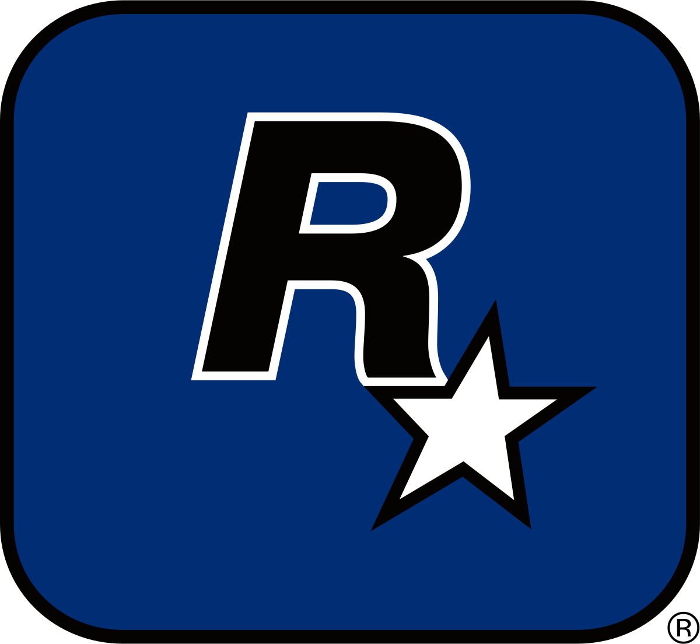
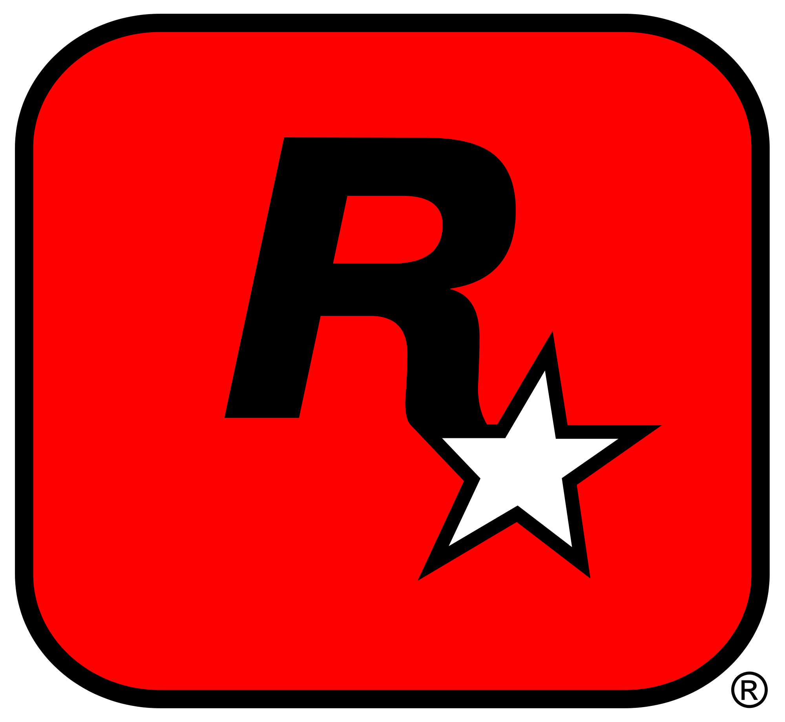

Rédiger un Article

Développeur :Rockstar North () / Rockstar Toronto ()/ Rockstar Studios ( )
)
Éditeur :Rockstar Games () / Take-Two ()
Date de Sortie :2023
Console :Playstation 5 () / Xbox Series X et S ()
Marion Séclin (interprétée par Marion Séclin elle même) est une jeune et jolie parisienne patronne d'une start up d'événementiel. Féministe le jour, elle se transforme en une jeune fêtarde délurée la nuit. Son caractère bien trempé lui empêche d'avoir une relation suivie avec les hommes jusqu'au jour où, lors d'un dîner, son amie (Marlène Schiappa), lui présente Paul (interprété par Alain Soral) un jeune homme timide et réservé. Au contact de Paul, Alice va parvenir à canaliser son tempérament ombrageux mais l'homosexualité cachée de ce dernier va la plonger dans un nouveau désarroi amoureux que seul David, son sex friend (interprété par Nagui, de l'émission à succés "Tout le monde veut prendre sa place" sur la chaine française "France 2") pourra combler.
Il n'y a pas de violences avec armes à feu dans ce jeu, pour empécher que les hommes blancs destremdroite puisse tués visieusement des PNJ, qui est plus est femmes, qui n'ont rien fait de mal et qui se promennent gaiement dans la ville. Le jeu est aussi entièrement en online, car c'est la ou la thune ce fait, et pas le contraire. Le jeu coutera 80€ et ne disposera pas de mises à jours gratuites, car nous avons besoins d'argent pour assurer la qualité des serveurs du jeu.
Marion Séclin, la féministe anti féministe
Marlène Schiappa, roublarde de niveau 55 sur World of Warcraft
Paul, avec son chien poupeto
David, qui est réellement chanceux
Emmanuel Micron le parrain de la mafia
Images
Image de la fin de bande annonce du jeu Grand Theft Auto 6 à l'E3 2020.
Image In Game de Grand Theft Auto 6.
Map de Grand Theft Auto 6 qui avait leaké en 2018.
Vignette du trailer de Grand Theft Auto 6 sur la chaine youtube de Rockstar Games.
Les amis de la personnage principale (à droite, Emmanuel Micron et à gauche, Marlène Schiappa).
Cette article à été créer par l'utilisateur@Ormidales